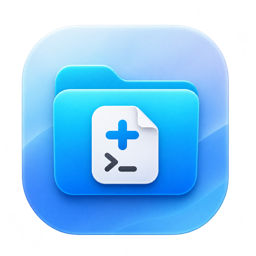

New File
Create an empty file with the name you choose.

ClickletCLICKLET · 1.0.1
Create a file, open Terminal, or copy a folder path. A little menu bar app that puts everyday tools into Finder.
Apple silicon · current macOS
Ad-hoc signed; not notarized.
Projects
Your folder. Your next step.
What
Clicklet lives in your menu bar and adds these actions to Finder’s context menu for local files and folders.
Create an empty file with the name you choose.
Make a new folder without leaving the current one.
Open Terminal in that folder with one click.
Copy the folder’s absolute path, ready to paste.
Why
The next thing you need is often right beside the file you’re working with. Clicklet keeps those little steps close, so you can stay with the task.
How
Install the app, enable its Finder extension, then work in your local folders.
Download the ZIP, unzip it, and move Clicklet.app to Applications.
Open the app. Use its setup prompt, or open Settings from the menu bar and choose Open Finder Extension Settings. Enable its extension there.
Right-click empty space inside a Finder folder, or select one folder and right-click. Choose the action you need. New File and New Folder ask for a name; Terminal and path copying run immediately.
When a file is selected, actions use its containing folder. Multiple selections are not supported.
macOS may ask for access to protected folders. Normal filesystem permissions still apply.
Version 1.0.1 · for local folders on current macOS